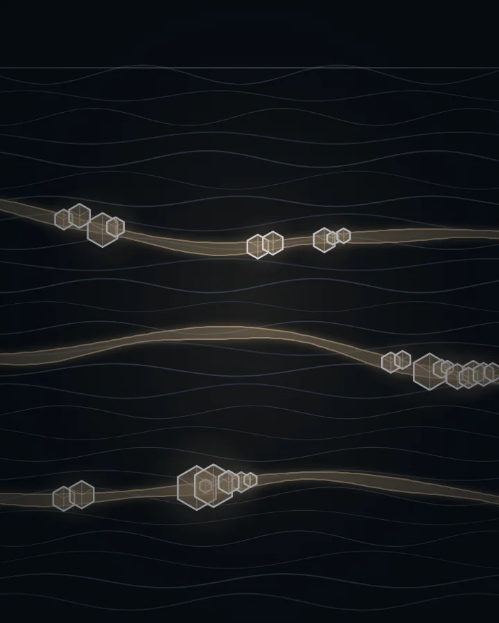
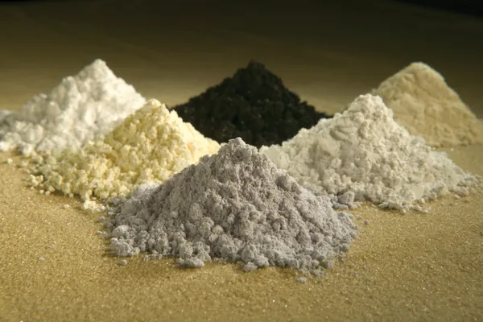
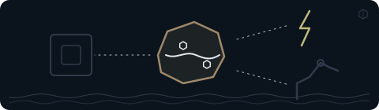

01
Ero Copper
0,53 %Kobber- og guldproducent med drift i Brasilien. Hovedaktivitet er salg af kobberkoncentrat fra Caraíba og Tucumã.
Læs om selskabet →Hvor i vejen fra råstof til materiale arbejder selskabet?
Det er ikke nok at vide, at teknologien bruger kobber, magneter eller batterimaterialer. Se også, hvor i forarbejdningen selskabet arbejder, og om der allerede er produktion eller stadig et projekt.

Mads Christiansen udvider i ugebrevet analysen af kobber fra mængder og priser til ejerskab, raffinering og afhængighed.
“Jeg skal også forstå, hvor kobberet kommer fra, hvem der kontrollerer minerne, hvem der raffinerer det, og hvilke lande der ønsker at være afhængige af hvilke andre lande.”Mads Christiansen, fondschef og medstifter af NewDeal Invest · 21.09.2026
Fonden
6,69%
af fonden ligger i temaet Råstoffer.
Siden viser, hvilke materialer det er, og om selskaberne allerede producerer eller stadig er et projekt. Den kan ikke vise, hvor meget af materialerne der ender i kunstig intelligens, for det kan ikke opgøres.
Andele af hele fonden, afdelingen PMINDI (NewDeal Invest klasse n, den udloddende andelsklasse, der udbetaler udbytte) pr. 16.10.2026.
Temaerne er NewDeal Invests egen opdeling af fondens selskaber. Pengene er fordelt på mange små andele. De fem største selskaber fylder tilsammen 1,97 % af fonden, under en tredjedel af temaet.
Andel af hele fonden, afdelingen PMINDI pr. 16.10.2026. Fondens seks andre temaer er mindre.
De fem største positioner i temaet, sorteret efter andel af hele PMINDI pr. 16.10.2026.
Kobber- og guldproducent med drift i Brasilien. Hovedaktivitet er salg af kobberkoncentrat fra Caraíba og Tucumã.
Læs om selskabet →Bryder, forarbejder og leverer antimon og ædelmetaller (Montana og Mexico) samt zeolit (Idaho).
Læs om selskabet →Se selskabets placering i temaets oversigt og i fondens positionsliste.
Se positionen →Bryder sjældne jordarter ved Mt Weld i Western Australia og fremstiller separerede oxider i Malaysia.
Læs om selskabet →Producerer sjældne jordarter, siden 2024 også NdPr, der bruges i magneter. Bryder også uran.
Læs om selskabet →Grundstofkortet
Andel af hele fonden, afdelingen PMINDI pr. 16.10.2026
De 36 selskaber fordeler sig på seks materialer, sat op som felterne i det periodiske system. Tallet øverst til venstre er antal selskaber. Fyldet nedefra viser andelen af fonden. Tryk på et felt for at se selskaberne.
7 selskaber: 4 i drift, 2 projekter og 1 med en ejerandel i et andet selskab · 1,45 % af fonden
Sjældne jordarter er en gruppe grundstoffer, der ikke er specielt sjældne, men svære at skille fra hinanden. De bruges mest til magneter, fx i elmotorer. Kina stod for godt to tredjedele af verdens mineproduktion af sjældne jordarter i 2025. I feltet er der både selskaber med miner, selskaber, der skiller stofferne ad, og et selskab, der laver selve magneterne.
Nd er symbolet for neodym, én af de sjældne jordarter. NdPr er neodym og praseodym, to sjældne jordarter, der bruges i magneter.
Tryk på et selskab for at se, hvad det laver.
8 selskaber · 1,35 % af fonden · 5 i drift, 3 projekter
Kobber leder strøm og varme godt. Feltet rummer temaets største selskab, Ero Copper, og Freeport-McMoRan, der ifølge selskabet selv er en af verdens største kobberproducenter blandt noterede selskaber. Freeport-McMoRan omsatte for omkring 172 mia. kr. i 2025. Det svarer i størrelse til ca. 5,5 % af Danmarks BNP. Tre af de otte er stadig projekter i USA, to af dem i Alaska.
Tryk på et selskab for at se, hvad det laver.
5 selskaber · 1,22 % af fonden · 5 i drift
Det eneste felt uden mine og uden grundstofsymbol. Her bliver materialet lavet på fabrikker: kølemidler, hvidt farvepigment (titandioxid), lim, belægninger og særlige plasttyper. Alle fem er i drift.
Ét af dem, Solstice Advanced Materials, laver også materialer til chipfremstilling. Om chipfremstilling kan du læse på siden Chips og halvledere.
Tryk på et selskab for at se, hvad det laver.
6 selskaber · 1,11 % af fonden · 6 i drift
Guld og sølv er ædelmetaller. De seks selskaber bryder dem i miner, og alle er i drift. Sølv bruges også i elektronik og solceller. Ifølge USGS, den amerikanske geologiske myndighed, gik omkring 25 % af USA's forbrug af sølv i 2025 til el og elektronik og 15 % til solceller. Ellers siger feltet mest om metallerne selv.
Tryk på et selskab for at se, hvad det laver.
4 selskaber · 0,80 % af fonden · 2 i drift, 2 projekter
Antimon (Sb), niobium (Nb) og wolfram (W). Et råstof kaldes kritisk, når det er vigtigt, og forsyningen kan være usikker. Temaets næststørste selskab, United States Antimony, er her. To af de fire er projekter.
Tryk på et selskab for at se, hvad det laver.
6 selskaber · 0,76 % af fonden · 3 i drift, 3 projekter
Lithium er et metal, som især bruges i batterier. Feltet rummer også et selskab, der genbruger gamle batterier, og et, der vil hente metalklumper op fra havbunden. Tre af de seks er projekter.
Tryk på et selskab for at se, hvad det laver.
Ti af de 36 er projekter, der endnu ikke producerer. Tilsammen står de for 1,13 % af fonden.
Store navne i branchen fylder lidt: Newmont 0,11 %, Albemarle 0,18 % og Freeport-McMoRan 0,24 % af fonden.
Feltet Nd, set nærmere
Sjældne jordarter er temaets største felt. Videoen fra Reuters forklarer, hvad stofferne er, hvad de bruges til, og hvorfor de er svære at skille fra hinanden.
Se efter: Handler det om en forekomst, et projekt eller materiale, der allerede bliver produceret?
Selskabets egen video
MP Materials er et af fondens selskaber. I videoen viser selskabet selv, hvordan malm fra minen Mountain Pass bliver til magneter. Videoen er fra 2023 og er selskabets egen fremstilling, ikke fondens.
Se efter: Handler det om en forekomst, et projekt eller materiale, der allerede bliver produceret?

Set udefra
Her er udvalgte opslag og videoer fra medier, myndigheder og andre. De er ikke fondens holdning. „Kort fortalt“ er vores danske gengivelse. Opslaget hentes først fra X, når du trykker på „Vis opslaget“.
Se efter: Handler det om en forekomst, et projekt eller materiale, der allerede bliver produceret?
Delt af Mads Christiansen fra teamet bag NewDeal Invest
Bloomberg @business · på engelsk
Kort fortalt Ifølge Bloomberg fremhævede præsident Donald Trump på et møde med ledere fra mineindustrien amerikanske investeringer på 3 mia. USD i udvinding af kritiske mineraler. Mødet skulle ifølge mediet gøre USA mindre afhængigt af forsyningskæder, som Kina dominerer.
Hvad skal du lægge mærke til? Læs opslaget sammen med afsnittet om grundstofkortet. Handler det om en forekomst, et projekt eller materiale, der allerede bliver produceret?
Delt af Mads Christiansen fra teamet bag NewDeal Invest
Elon Musk @elonmusk · på engelsk
Kort fortalt Elon Musk, topchef i Tesla, skriver, at motoren i Cybercab, Teslas selvkørende taxa, ikke bruger sjældne jordartsmetaller, men har samme rækkevidde. Ifølge ham var det meget svært at opnå. Det er Teslas egen oplysning. Tesla er blandt fondens selskaber pr. 16.10.2026 og hører til temaet Robotter & fysisk AI.
Hvad skal du lægge mærke til? Læs opslaget sammen med afsnittet om sjældne jordarter. Handler det om en forekomst, et projekt eller materiale, der allerede bliver produceret?
Reuters @Reuters · på engelsk
Kort fortalt Ifølge Reuters har bilproducenten General Motors (GM) opsagt en aftale med en ny amerikansk fabrik til magneter af sjældne jordarter. Reuters skriver, at oplysningen stammer fra dokumenter. General Motors er blandt fondens selskaber pr. 16.10.2026 og hører til temaet Robotter & fysisk AI.
Hvad skal du lægge mærke til? Læs opslaget sammen med afsnittet om sjældne jordarter. Handler det om en forekomst, et projekt eller materiale, der allerede bliver produceret?
MINING.COM @mining · på engelsk
Kort fortalt Ifølge MINING.COM har Ghanas præsident John Mahama oplyst, at landet planlægger at forbyde eksport af uforarbejdede mineraler som mangan, bauxit, jern og lithium senest i 2030. Mediet skriver, at forbuddet skal indføres gradvist med lovgivning og krav om forarbejdning i landet.
Hvad skal du lægge mærke til? Læs opslaget sammen med afsnittet om risikoen få lande. Handler det om en forekomst, et projekt eller materiale, der allerede bliver produceret?
Opslagene er udvalgt af teamet bag NewDeal Invest. Afsenderne og de nævnte selskaber står ikke bag denne side, og opslagene er ikke fondens vurdering.
Videre

Materialerne bliver til chips, kabler, batterier og motorer, som har deres egne temaer i fonden.
Fire af selskaberne laver også noget, der hører til et andet tema: Energy Fuels (Energi og elnet), Chemours (Datacentre), Solstice Advanced Materials (Chips og halvledere) og MP Materials (Robotter & fysisk AI). I fondens opdeling tælles de kun med her.
Tegninger, ikoner og videoplakater. Illustration: NewDeal Invest. Fotoet af de sjældne jordarter: Peggy Greb, USDA Agricultural Research Service, offentligt domæne, Wikimedia Commons (åbner i nyt vindue) (beskåret).
Videoerne er fra Reuters, British Geological Survey og MP Materials og vises fra YouTube, først når du trykker på dem. Opslagene er fra X. Logoer tilhører de enkelte selskaber og viser kun, hvilke selskaber fonden ejer aktier i. Afsenderne og selskaberne står ikke bag denne side, og der er intet samarbejde med dem.